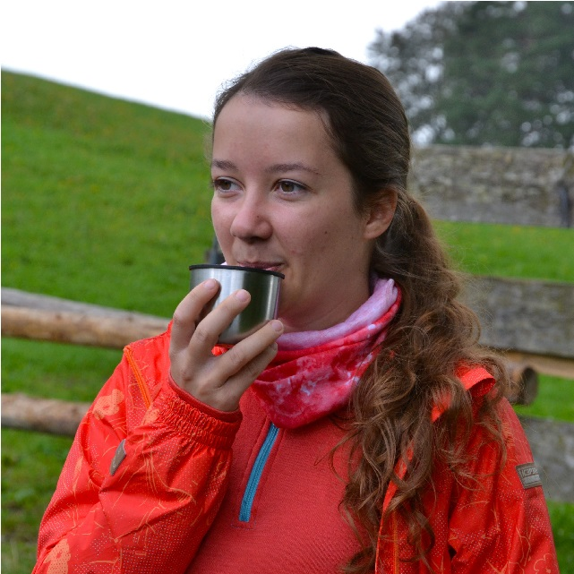

Tým
A kdo že to vlastně chystá? Maara, Kája, Rissie, Glum, Marťa a Haňule - dobrovolníci z Instruktorů Brno. Tady si můžeš přečíst, co se o každém z nich v našem týmu povídá.
Maara

Kdo je Maara?
Maara je hudebník srdcem i duší. Zahraje téměř na cokoli a ochotně to učí i své kamarády. Jeho domácnost tvoří z půlky hudebniny, z půlky hamaky. To je fakt! Když zrovna na nic nebrnká nebo nepospává v hamace, hraje hry deskové i počítačové a popíjí přitom Kofolu.
Kterou večerníčkovou postavu nám nejvíc připomíná a čím?
Maxipes Fík – protože to je veliký a citlivý dobrák, který toho hodně sní a ochotně svým přátelům pomáhá.
Podle čeho si Maara vybírá přátele?
Maara nerad vaří, takže se jeho kamarádem pravděpodobně stane ten, kdo mu něco dobrého ukuchtí. Nebo kdo si s ním zabrnká na kytaru či zahraje deskovku. Třeba Mars.
Kája
Kdo je Kája?
Paní doktorka, co ošetří každé zranění. Její předností je, že vám většinou nebude zavazet ve výhledu (vsedě ani vestoje). Co nepobrala co do výšky, dohání pracovitostí, velkým srdcem a velkým mozkem. Je to workoholik a veselá bytost, množstvím energie by občas předběhla i králíčka Duracella. V týdnu spí málo a o víkendech moc, ale dobrou náladu má téměř neustále.
Kterou večerníčkovou postavu nám nejvíc připomíná a čím?
Bobek - protože se mu ráno nechce vstávat, ale když už se do něčeho pustí, je celkem akční. A taky je to ten menší.
Podle čeho si Kája vybírá přátele?
Dostatečně mladé a zdravé, aby je nepotkala při práci v pitevně. Má ráda větší lidi než je sama, protože jinak by nemohla mít ráda žádné lidi. Navíc jí můžou podávat věci z míst, kam ona nedosáhne.
Rissie
Kdo je Rissie?
Občas je veselá, akční a praštěná, ale jak jí dojde energie, tak připomíná chcíplého lachtana. To se jí pak radši kliďte z cesty. Jinak s oblibou čte a očichává knížky a v zimě leze do studené vody. Taky zapomíná všechno a všechny – to sice dělá nerada, ale nemá na vybranou. Jednou zapomene i to, že pořádala tuto akci.
Kterou večerníčkovou postavu nám nejvíc připomíná a čím?
Šebestovou – je to děvče rozumné, kterému se dějí různá příkoří. Navíc je Šebestová ztřeštěná, dobromyslná, pomáhá druhým a má moc ráda zvířata.
Podle čeho si Rissie vybírá přátele?
Přece podle toho, jak moc jsou zajímaví a akční a divní. Čím divnější, tím lepší. Taky pomáhá, když si rádi přečtou i něco delšího než příspěvky na Twitteru.
Glum
Kdo je Glum?
Glum je rychlý běžec, srdcař, vtipálek a pořadatel slizových bitev. Pro akci i pro tým by se rozkrájel (a pro účastníky samozřejmě taky, nebojte). Pokud ho vidíte brnkat s Maarou na kytaru, směle se přibližte. Pokud směrem k vám běží lesem, zabahněný a se šíleným leskem v očích, raději utíkejte. Jinak vás dožene a v tom bahně vyválí.
Kterou večerníčkovou postavu nám nejvíc připomíná a čím?
Kavku ze Štaflíka a Špagetky, protože je dobromyslně škodolibá a rychle vezme do zaječích, když ji chce někdo praštit.
Podle čeho si Glum vybírá přátele?
Podle toho, jestli je na ně spoleh a může si z nich dělat legraci. Taky se hodí, když umějí péct dorty nebo Gluma prostě něčím nakrmí. A podle toho, jak moc s ním chtějí jezdit do hor nebo na vodu.
Marťa
Kdo je Marťa?
Hlavu má věčně v oblacích, takže na cestách občas narazí čelem přímo do stromu. Ráda vymýšlí nové věci (a blbosti). Když nelítá v myšlenkách, lítá s vařečkou v kuchyni. Její profese je dost psycho. Psychologii i učí a prý jí to baví. Ráda sedává ve svém ušáku Strandmon, píše deník a popíjí k tomu lahodný čaj.
Kterou večerníčkovou postavu nám nejvíc připomíná a čím?
Makovou panenku, protože často nosí sukni, má ráda makový buchty a když lidi používají svoji makovici. Taky má pořádný kukadla, a aby s nimi lépe viděla, tak taky pěkně velký brýle! Když budete chtít, můžete si s ní zatančit.
Podle čeho si vybírá přátele?
Hlavní je, aby měli velký srdíčko. A žaludek, protože jim ráda vaří. Taky chce, aby s ní chodili na výlety a do kaváren (nebo na výlety do kaváren). Významné plus mají, když Marti opraví věci, které rozbila.
Haňule

Kdo je Haňule?
Haňule je akční žena! Můžeš ji potkat v lanáči, kde pracuje a srovnává děti do latě. Jinak je přímá, upřímná a moc se s tím neštve. S čím? Přece s ničím! Profesně prošla proměnou od popírače psychologie po studenta psychologie a ve volném čase se učí krotit struny na kytaře.
Kterou večerníčkovou postavu nám nejvíc připomíná a čím?
Jerryho (Tom a Jerry) – protože to je trochu potměšilý, pobíhající mrňous, co rád svádí věci na ostatní. Ale taky je to věrný kámoš. Jako nepřátele si vybírá ty, co jsou větší než on, protože to je výzva… i když to pak většinou stejně končí prohrou.
Podle čeho si Haňule vybírá přátele?
Musí to být fešáci (a to my všichni jsme!) a musí se na ně dát svádět věci. A taky musí být akční, žádní líní kapustňáci! A musí mít zdravá kolena, aby mohli Haňuli pomáhat a ona se přitom mohla smát jako Jerry.